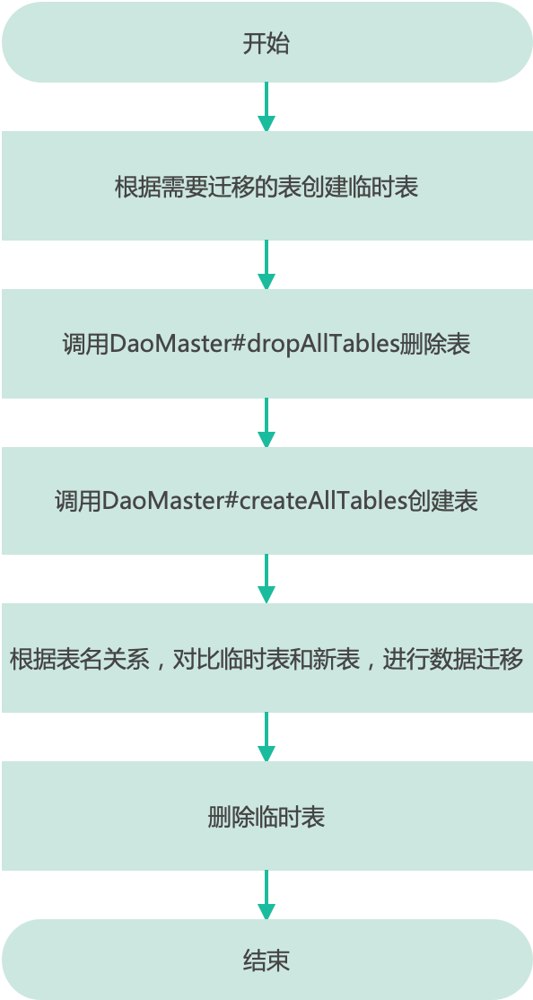

三思系列：前人用GreenDao留下的坑，全线被扣了绩效
前言
本篇文章，您将从一个GreenDao使用的事故开始，围观事故现场，并获得问题分析结论。跟随作者再次巩固GreenDao的整体设计，并实践 APT 、 Gradle Plugin 两种方案，通过不断地总结、对比和深度反思扫荡盲区，将知识融会贯通！
创作三思系列是我学习、总结、反思的一种方式，着重于:问题分析、技术积累、视野拓展。了解三思系列
去年年末，出了一个可大可小的事故，导致开发、测试一条线都被扣了绩效。
背景是这样的：
- 项目的部分业务数据存储于 本地数据库
- 数据库业务使用了ORM框架--GreenDao
- 采用了类似 GreenDaoUpgradeHelper 的方案处理 "数据库版本升级"
然而，最终事故发生在调用 Migration 时，遗漏了Dao，如果读者对这类 粗犷的 升级方案有所了解，一定猜到了最终结果：表数据丢失！！！
很显然，导致最终结果的原因是多元的：
- 前人采用的数据库升级方案就很危险
- 特殊渠道包的更新频次低、时间跨度长，测试覆盖粒度不够细（仅回归主功能、增量实现、从主包同步的bug修改和优化）导致一直未发现问题
- 轻易地相信了一个老项目，没有对基建部分进行详细的review
- ...
作者按：可大可小的原因--性质比较恶劣的研发测试流程问题；值得庆幸的是这部分数据不会影响使用正确性，且发生在特殊用途的增量包中，影响范围很小，通过日志分析可回滚弥补。
显然，诸位亲爱的读者点进来，除了围观事故现场，还想看点别的！那自然不能辜负读者厚爱，本篇会同读者一起做一些有趣的事情。
前人的使用方式概览
在真正开始之前，我们还需要耐心地看一下前人的使用方式，此乃前车之鉴，如果你的项目中也有类似的用法，可能需要尽早地、仔细地Review一遍。
- 正常的导包、应用plugin -- 没问题
- gradle配置
GreendaoOptions-- 没问题， targetGenDir配置到了常规sourceSet中，增加一些代码提交和merge conflict 问题不大 - 用注解标识Entity -- 参数都是默认的，问题不大，没有隐藏的大坑
- 自实现了
DaoMaster.OpenHelper-- 没问题 - 自定义了数据库升级的helper，类似前文提到的GreenDaoUpgradeHelper -- 坑比较大：
- 性能问题
- 临时表名产生的制约
- 人工维护传入的dao -- 直接导致的事故
可能大多数项目的使用方式都是类似的，那么有三大问题丞待解决：
- 需要人工维护升级的dao参数 -- 人的记性差，容易遗漏。不符合GreenDaoUpgradeHelper 等工具的设计初衷，即不需要人工维护升级细节
- restore时的效率问题
- 临时表名无形中产生的制约
限于篇幅，本篇只解决第一个问题，点出第二个问题，分析第三个问题。
GreenDao 如何进入升级（降级）
我们知道： Sqlite 存在有 PRAGMA 命令，可以在 SQLite 环境内控制各种环境变量和状态标志。而数据库的版本信息存储为 环境变量 user_version
通过以下sql进行查询和设置：
#查询
PRAGMA user_version;
#设置
PRAGMA user_version = {version}
而GreenDao配置的schemaVersion：
greendao {
schemaVersion 1000
}
将通过gradle-task：greendao 写入生成的 DaoMaster 中,并作为 SQLiteOpenHelper 的 version 参数，与数据库的 user_version
比对后，判断是否需要进行创建、升级、降级。
public class DaoMaster extends AbstractDaoMaster {
public static final int SCHEMA_VERSION = 1000;
//...
public static abstract class OpenHelper extends DatabaseOpenHelper {
public OpenHelper(Context context, String name) {
super(context, name, SCHEMA_VERSION);
}
public OpenHelper(Context context, String name, CursorFactory factory) {
super(context, name, factory, SCHEMA_VERSION);
}
//...
}
}
节选 SQLiteOpenHelper 一段代码如下：
db.beginTransaction();
try {
if (version == 0) {
onCreate(db);
} else {
if (version > mNewVersion) {
onDowngrade(db, version, mNewVersion);
} else {
onUpgrade(db, version, mNewVersion);
}
}
db.setVersion(mNewVersion);
db.setTransactionSuccessful();
} finally {
db.endTransaction();
}
您一定注意到：此处已经开启了数据库事务，如果将升级任务置于额外的线程执行，也存在风险！做好设计，减少甚至杜绝表结构变更 是最佳实践！
升级Helper概览
几乎所有可以搜索到的工具，均以以下流程作为实现方案：

表名关系：诸如 临时表名 = {原表名}+"_TEMP"
作者按：为了方便，下文以 tempTableName 指代临时表名，oTableName 指代Entity对应的表名
1.创建临时表
- 删除临时表
DROP TABLE IF EXISTS {tempTableName}-- 看似没有毛病，但如果存在业务设计的临库临表，就被误删除了 - 创建临时表
CREATE TEMPORARY TABLE {tempTableName} AS SELECT * FROM {oTableName}
比较奇怪的是：为何不:
- 先判断临时表名是否存在，如存在则抛错，
- 然后再判断新增表是否会和临时表重名，如果存在则抛错，
- 继而在同一数据库内使用
ALTER TABLE {oTableName} RENAME TO {tempTableName}修改表名
作者按：此处仅为一个设想，是Sqlite支持的SQL，但并未在Android项目中实践验证以及推理可能出现的问题。
可以预见的是：即便增加校验，也无法避免用户绕开GreenDao进行数据库操作所带来的隐性冲突可能。
GreenDaoUpgradeHelper在新的临时数据库中处理临时表，作者公司项目中的代码在原数据库中处理
2.调用DaoMaster删除表
逻辑借用了GreenDao生成的代码，细节忽略
3.调用DaoMaster生成表
逻辑借用了GreenDao生成的代码，细节忽略
4.restore数据
根据 tempTableName 和 oTableName 两张表的结构，构建SQL，迁移数据，细节忽略
小结
至此，我们已经完成了问题2、3的基本分析：
- 人工维护需要升级的dao
- restore时的效率问题 -- 不需要升级的表也进行了I/O，不需要变更的字段也进行了I/O
- 临时表名无形中产生的制约 -- 同库情况下产生制约，创建无冲突的临库则无影响，但会增加I/O
显而易见：问题2、3可以通过 "健壮的、可靠的数据库设计以降低升级数据库的需求"、"更加细致、高效的升级SQL" 加以解决。
作者按：虽然前文为它们花费了较长的篇幅，但它们不是这篇文章的主角，以后时间充裕的话，我会考虑造一个更好用、高效的轮子
而问题1的原因更加明显：GreenDao 并没有设计相关功能 用以提供需要升级的DAO信息 。而从数据库升级的算法流程分析，需要的DAO信息为全部的DAO类集合即可
经过前文大篇幅的分析，我们已经完成了第一次扣题：思危 -- 发现、分析危险。
如果有读者已经很不幸地处于危险之中，则需要开始思退。
两种可行的额外技术手段
此时让我们退一步，冷静地思考下：为什么先前的开发人员选择了 人工维护DAO类的Collection 呢？
诚然，GreenDao 没有帮助开发者维护 需要升级的表信息 ，这种小事也没有必要提issue；
进一步思考：GreenDao将升级都交由开发者自行维护，Entity也由开发者自行创建，更没有理由提供这一信息；
更进一步思考：GreenDao还存在着 高级用法 ，此时表可以交由开发者创建、维护。当自由度提升，没有 可靠的机制 帮助GreenDao判断开发者需要哪些信息；
终极思考：是否GreenDao提供了，但开发者没注意到？
但不用担心，我们自己动手，依旧可以丰衣足食，虽然方案的出发点本身存在不合理之处。
方案1：注解处理技术
GreenDao使用 @Entity 对实体类进行注解，例如：
@Entity(indexes = {
@Index(value = "text, date DESC", unique = true)
})
public class Note {
@Id
private Long id;
@NotNull
private String text;
private String comment;
private java.util.Date date;
@Convert(converter = NoteTypeConverter.class, columnType = String.class)
private NoteType type;
}
依据 @Entity 注解，通过APT机制，我们可以很轻易的收集Entity对应的 AbstractDao 类信息
作者按：APT stands for Annotation Processing Tool. Sun shipped an API for APT in JDK 1.5, which can be viewed at 一个你不愿意打开，打开了也不乐意看的网站😂
方案2：GreenDao插件
众所周知，GreenDao通过Gradle Plugin完成了：
- Entity 发现
- Entity 中表字段关系、索引、约束分析，源码级代码插桩
- Dao 生成
- DaoMaster生成
如果我们可以 "入侵" 这一系列的流程，显然也可以达成目标，毕竟，生成的DaoMaster类头注释了：knows all DAOs.
/**
* Master of DAO (schema version 1000): knows all DAOs.
*/
public class DaoMaster extends AbstractDaoMaster {
//...
}
小时牛刀--注解处理
先简单回顾一下Entity注解的源码：
/**
* Annotation for entities
* greenDAO only persist objects of classes which are marked with this annotation
*/
@Retention(RetentionPolicy.SOURCE)
@Target(ElementType.TYPE)
public @interface Entity {
/**
* Specifies the name on the DB side (e.g. table name) this entity maps to. By default, the name is based on the entities class name.
*/
String nameInDb() default "";
/**
* Indexes for the entity.
* <p/>
* Note: To create a single-column index consider using {@link Index} on the property itself
*/
Index[] indexes() default {};
/**
* Advanced flag to disable table creation in the database (when set to false). This can be used to create partial
* entities, which may use only a sub set of properties. Be aware however that greenDAO does not sync multiple
* entities, e.g. in caches.
*/
boolean createInDb() default true;
/**
* Specifies schema name for the entity: greenDAO can generate independent sets of classes for each schema.
* Entities which belong to different schemas should <strong>not</strong> have relations.
*/
String schema() default "default";
/**
* Whether update/delete/refresh methods should be generated.
* If entity has defined {@link ToMany} or {@link ToOne} relations, then it is active independently from this value
*/
boolean active() default false;
/**
* Whether an all properties constructor should be generated. A no-args constructor is always required.
*/
boolean generateConstructors() default true;
/**
* Whether getters and setters for properties should be generated if missing.
*/
boolean generateGettersSetters() default true;
/**
* Define a protobuf class of this entity to create an additional, special DAO for.
*/
Class protobuf() default void.class;
}
作用在 TYPE 上，保存至源码级别，显然没有限制。
剩下来的工作非常简单：
- 实现
AbstractProcessor并完成SPI注册，进入到AnnotationProcessor流程 - 通过获取
Entity注解类对应的TypeElement，判断项目是否正确配置 - 获取被注解的类，收集必要的信息
- 可选项1：甄别是否会出现临时表表名冲突，编译期抛错优于运行期
- 可选项2：排除Kotlin类等干扰项，GreenDao仅支持Java
- 生成代码
具体代码可参考 GreenDaoCollector 中的 greendao-collector 部分
作者按：相信诸位读者对APT都有一定程度的掌握，如果掌握程度还不够熟练，在有时间条件的基础下，可以结合本案例展开一次练习
额外的风险
看至此处，您一定已经对 可选项2：排除Kotlin类等干扰项，GreenDao仅支持Java 这句话进行了思考，并对我将 Entity 注解的源码全文粘贴于上这一 水字数
的行为表示了鄙夷。
但是请注意：
- GreenDaoCollector 没有考虑注解中
boolean createInDb() default true;等方法 - GreenDao存在一些限制，例如不支持Kotlin，GreenDaoCollector 采用了一个取巧的方案来甄别排除不支持的类
- 越精密的机器越容易出现故障，对于复杂的机制也是如此
作者按：这一取巧的方案为：使用GreenDao时一般会为Entity生成相应的构造函数和Getter、Setter，追加的构造函数代码会被 @Generated 注解，基于此排除不支持的类，但请注意这一行为可以被关闭而造成误判。
很显然，该方案将承受巨大的风险，它仿刻了GreenDao的结果，但采用了不同的机制 ，出现问题的机率会大增！
渐入佳境--插件魔改
莫非命也，顺受其正，是故知命者不立乎岩墙之下。尽其道而死者，正命也；桎梏死者，非正命也。
防祸于先而不致于后伤情。知而慎行，君子不立于危墙之下，焉可等闲视之
-- 《孟子》
此时我们已经充分意识到第一个方案的风险，让我们来思考第二个方案，并做出对比。
您一定知道：GreenDao plugin 提供了两个 Gradle Task：
- greendaoPrepare
- greendao
作者按：GreenDao的插件并未开源，我们选择尊重GreenDao的团队，文中不讨论通过反编译才能得到的信息
窥一斑而见全豹--分析其设计
如果您先前了解过Gradle Plugin，那一定知道Gradle的Task均有其输入和输出。
而顾名思义，greendaoPrepare 一定是一个准备工作，将它的输出做为 greendao Task的输入，
结合 GreenDaoCollector 项目中的sample可以获知，其输出为：
// 相对路径：build/cache/greendao-candidates.list
1649475279008
{略去}/GreenDaoCollector/app/src/main/java/osp/leobert/android/gdc/entity/JavaDemoEntity.java
{略去}/GreenDaoCollector/app/src/main/java/osp/leobert/android/gdc/entity/JavaDemoEntityTemp.java
并且您一定注意到了，JavaDemoEntityTemp 已经被全文注释
从结果来看， greendaoPrepare 一定不是 基于编译或者基于AST 的方案，它必然是一个从源码文件中 快速筛选 可能存在Entity的方案，用以减少 greendao Task
的性能开销，可以很轻易的推断出 通过字符串匹配 实现这一功能。
言归正传，您一定知道：gradle借助pom文件实现library依赖管理，通过greendao plugin 的pom文件可知： 插件依赖 greendao-code-modifier。
greendao-code-modifier 同样未开源，通过pom文件分析其依赖：
- greendao-api 开源，greendao中的注解和基础interface
- greendao-generator 开源，生成源码部分
- greenrobot-jdt，Repackaged version of JDT
- essentials ， 开源，用于计算Hash
作者按：相关的pom文件，可以于MavenCentral中检索，或者查看gradle/maven 的本地cache，或者在 GreenDaoCollector 的files目录中 查阅。考虑到阅读体验，重要部分摘录附于文末
至此，我们得出结论：
通过 greendaoPrepare 任务，基于源码内容做字符串检索，快速筛选出可能是Entity的源码，信息输出到文件：greendao-candidates.list
读取greendao-candidates.list 文件内容，基于jdt分析其源码语法树（AST）
基于AST和注解解析Entity、主键、索引、约束、关联等
调用greendao-generator生成源码
作者按：JDT 是eclipse为Java提供的一组工具，可以实现APT、支持Java editing等
如果您对Intellij中 与Java、Kotlin源码相关 的插件开发有一定的了解，对其早期使用的 lombok-ast 和后来使用的 uast 一定不会感到陌生，JDT也是类似的工具。
言归正传，我们只需要改变 greendao-generator 生成代码的实现即可实现需求！
阅读 greendao-generator 源码后，您将获悉：它因为 业务非常复杂 而使用FreeMaker作为模板引擎生成源码。
难道要使用字节码技术，直接修改加载模板处的源码，增加新的模板，这么轻易就放大招了吗？
大象无形--利用加载机制做文章
可以发现，greenDao对FreeMaker的初始化代码如下：
public class DaoGenerator {
private Configuration getConfiguration(String probingTemplate) throws IOException {
Configuration config = new Configuration(Configuration.VERSION_2_3_29);
config.setClassForTemplateLoading(getClass(), "/");
}
}
简单查看源码：
public void setClassForTemplateLoading(Class resourceLoaderClass, String basePackagePath) {
setTemplateLoader(new ClassTemplateLoader(resourceLoaderClass, basePackagePath));
}
/**
* A {@link TemplateLoader} that can load templates from the "classpath". Naturally, it can load from jar files, or from
* anywhere where Java can load classes from. Internally, it uses {@link Class#getResource(String)} or
* {@link ClassLoader#getResource(String)} to load templates.
*/
public class ClassTemplateLoader extends URLTemplateLoader {
//ignore 看类注释
}
如果您了解 Class.getResource(String name) 方法，并且对打包有了解，则可以得出结论：
关键点在于
ClassLoader#getResource并且存在Parent-delegate机制。只需要在plugin中增加同名模板，在plugin被运行时，该模板将被先加载。
作者按：此处不再展开，否则十篇文章也写不完。
实现目标只需要两步：
- 新建插件，通过继承或者使用组合，直接使用GreenDao插件逻辑，选用组合,因为无法继承
- 新增同名模板，并增加相关逻辑用以生成代码，最终选用dao-master模板
重点代码如下： 具体代码可参考 GreenDaoCollector 中的 greendao-plugin-wrapper 部分
//插件
class GreenDaoPluginWrapper : Plugin<Project> {
private val wrapper: Plugin<Project> = Greendao3GradlePlugin()
override fun apply(project: Project) {
wrapper.apply(project)
}
}
//模板
/**
* Master of DAO (schema version ${schema.version?c}): knows all DAOs.
*/
public class ${schema.prefix}DaoMaster extends AbstractDaoMaster{
public static final int SCHEMA_VERSION=${schema.version?c};
// all dao need to create in db, do not modify, created by leobert
public static final List<Class<? extends AbstractDao<?, ?>>>allDao=new java.util.ArrayList();
static {
<#list schema.entities as entity>
<#if!entity.skipCreationInDb>
allDao.add(${entity.classNameDao}.class);
</#if>
</#list>
}
//其他略
}
读者应该还记得前文的 Entity 注解以及我提到的只言片语，开发者可以自行创建数据库，或者从某处获得数据库直接使用，那么可以通过 boolean createInDb() 等配置 令GreenDao忽略表的创建与删除。
示例模板中通过 <#if!entity.skipCreationInDb> 的判断，排除了无需GreenDao协助建表的DAO。但请务必留心，数据库表升级永远是业务级别的工作，框架和工具再好，也需要 根据实际业务进行调整
！
应用插件后效果如下：
// THIS CODE IS GENERATED BY greenDAO, DO NOT EDIT.
/**
* Master of DAO (schema version 1): knows all DAOs.
*/
public class DaoMaster extends AbstractDaoMaster {
public static final int SCHEMA_VERSION = 1;
// all dao need to create in db, do not modify, created by leobert
public static final List<Class<? extends AbstractDao<?, ?>>> allDao = new java.util.ArrayList();
static {
allDao.add(JavaDemoEntityDao.class);
}
/** Creates underlying database table using DAOs. */
public static void createAllTables(Database db, boolean ifNotExists) {
JavaDemoEntityDao.createTable(db, ifNotExists);
}
/** Drops underlying database table using DAOs. */
public static void dropAllTables(Database db, boolean ifExists) {
JavaDemoEntityDao.dropTable(db, ifExists);
}
//其他略
}
与方案1对比
显而易见，方案2借用了greendao的插件业务逻辑，除了在模板中增加少许内容，再无其他，无论风险性还是简易性均优于方案1。
模板中基于 <#if!entity.skipCreationInDb> 判断，收集的dao信息与 createAllTables、dropAllTables 中保持一致！当然，亦可以移除判断，收集所有的dao ，**
需结合业务做出选择**。
不具备编译时临时表名冲突检测功能。
前车之鉴--大彻大悟,一个错误犯两次
前车已覆，后未知更，何觉时？
-- 《荀子·成相》
这句话讲的是成语前车之鉴，让我们回顾一下：
导致问题的原因：
- 前人采用的数据库升级方案就很危险
- 特殊渠道包的更新频次低、时间跨度长，测试覆盖粒度不够细，导致一直未发现问题
- 轻易地相信了一个老项目，没有对基建部分进行详细的review
- ...
升级方案丞待解决的问题：
- 需要人工维护升级的dao参数，容易遗漏，存在风险
- restore时的效率问题
- 临时表名无形中产生的制约
采用的手段
使用了 APT 和 包装插件替换模板 两种技术手段，为一个 非最佳的数据库表升级方案 解决了 需要人工维护参数 的问题。
显而易见，最佳的实践方案应当为：
替换一套健壮、高效的数据库升级方案: 自动收集需要升级的表 -- 排除无效迁移工作提升效率、使用自动化替代人工规避人的错误。同时满足 可测性
那么立足当下，方案1、2就是最佳实践了吗？请重读下面这两句话：
- 轻易地相信了一个老项目，没有对基建部分进行详细的review
- Master of DAO (schema version 1000): knows all DAOs.
同一个错误又犯了一次: 我们轻易地否定了一个老项目，没有对它的代码进行详细的review
val allDao: List<Class<AbstractDao<*, *>>> = DaoMaster(
SQLiteDatabase.create(null)
).newSession().allDaos.map {
it.javaClass
}.toCollection(arrayListOf())
DaoMaster 的模板中，为其构造函数实现了所有Dao的注册，无论是否创建表，它们都会被汇总到
Map<Class<?>, AbstractDao<?, ?>> AbstractDaoSession#entityToDao 中。
但您需要始终牢记，这是在为一个非最佳方案服务，一旦使用了更好的方案，这一方式将不再适用！
总结
本篇，我们从一个事故开始，展开了问题分析，并提出技术方案，实现方案并进行了知识巩固，通过不断地总结、对比和深度反思扫荡盲区！
如果单纯的服务于解决问题，这篇博客将不会存在，区区10行代码即可。但三思系列是学习、总结、反思的一种方式，着重于:问题分析、技术积累、视野拓展 ，看完这一篇，我相信你收获的内容 远远超过 一个bug的解法。
附
项目源码
作为数据库版本升级方案示例的： GreenDaoUpgradeHelper
Sample代码，APT, Plugin 及部分资料均开源 ：GreenDaoCollector
pom文件摘要
<!--greendao-gradle-plugin-3.3.0.pom-->
<groupId>org.greenrobot</groupId>
<artifactId>greendao-gradle-plugin</artifactId>
<version>3.3.0</version>
<name>greenDAO Gradle Plugin</name>
<description>Gradle Plugin for greenDAO, the light and fast ORM for Android</description>
<url>https://github.com/greenrobot/greenDAO</url>
<!-- 略-->
<dependencies>
<dependency>
<groupId>org.greenrobot</groupId>
<artifactId>greendao-code-modifier</artifactId>
<version>3.3.0</version>
<scope>compile</scope>
</dependency>
<!-- 略-->
</dependencies>
<!--greendao-code-modifier-3.3.0.pom-->
<groupId>org.greenrobot</groupId>
<artifactId>greendao-code-modifier</artifactId>
<version>3.3.0</version>
<name>greenDAO Code Modifier</name>
<description>Code modifier for greenDAO, the light and fast ORM for Android</description>
<url>https://github.com/greenrobot/greenDAO</url>
<!-- 略-->
<dependencies>
<dependency>
<groupId>org.greenrobot</groupId>
<artifactId>greendao-api</artifactId>
<version>3.3.0</version>
<scope>compile</scope>
</dependency>
<dependency>
<groupId>org.greenrobot</groupId>
<artifactId>greendao-generator</artifactId>
<version>3.3.0</version>
<scope>compile</scope>
</dependency>
<dependency>
<groupId>org.greenrobot</groupId>
<artifactId>greenrobot-jdt</artifactId>
<version>3.20.0</version>
<scope>compile</scope>
</dependency>
<dependency>
<groupId>org.greenrobot</groupId>
<artifactId>essentials</artifactId>
<version>3.0.0-RC1</version>
<scope>compile</scope>
</dependency>
<!-- 略-->
</dependencies>